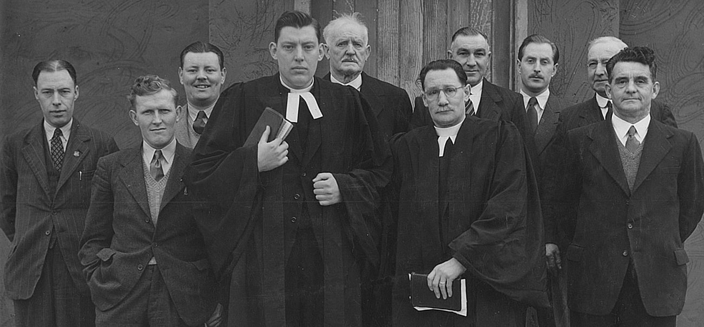
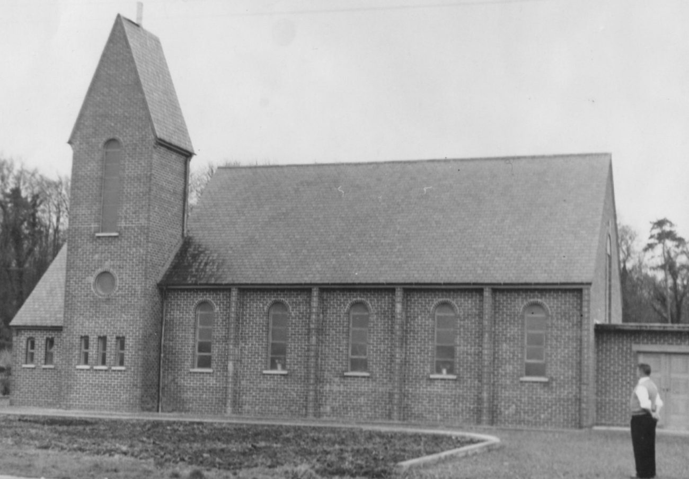
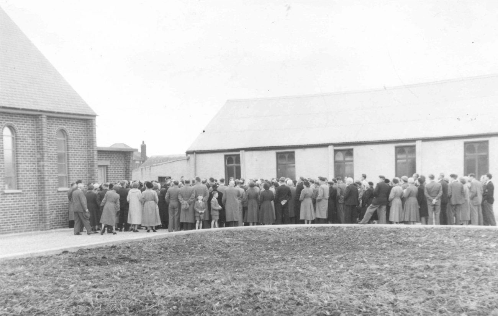
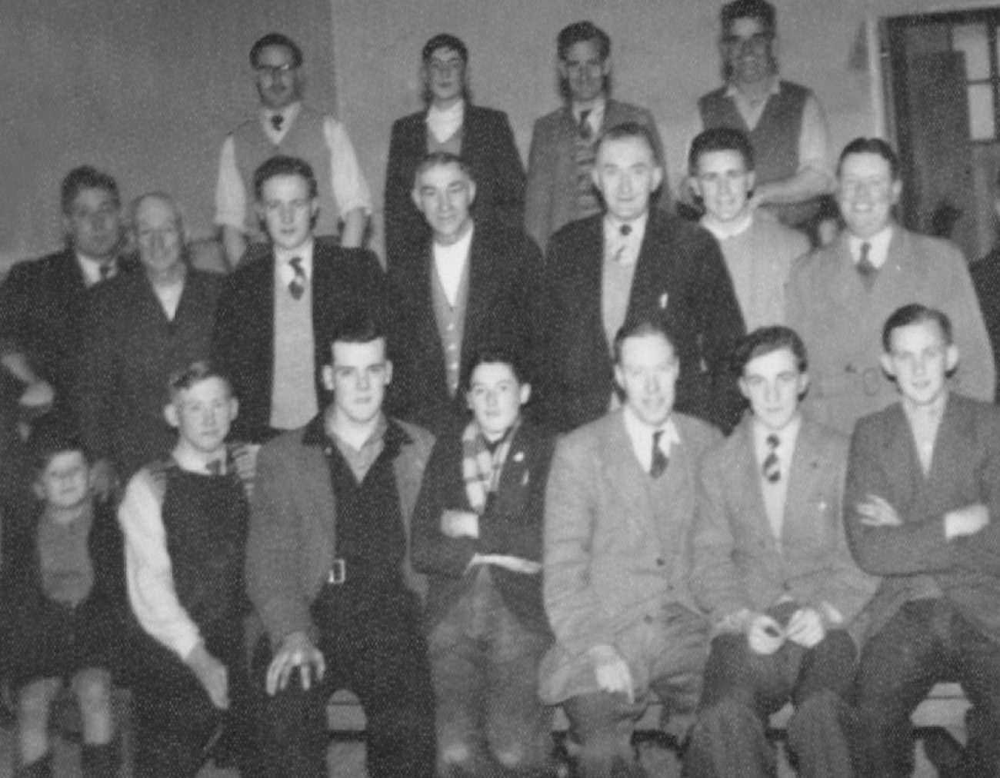
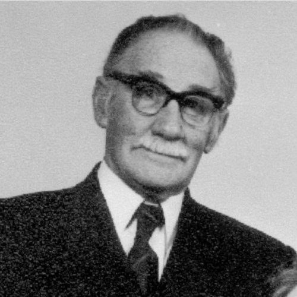
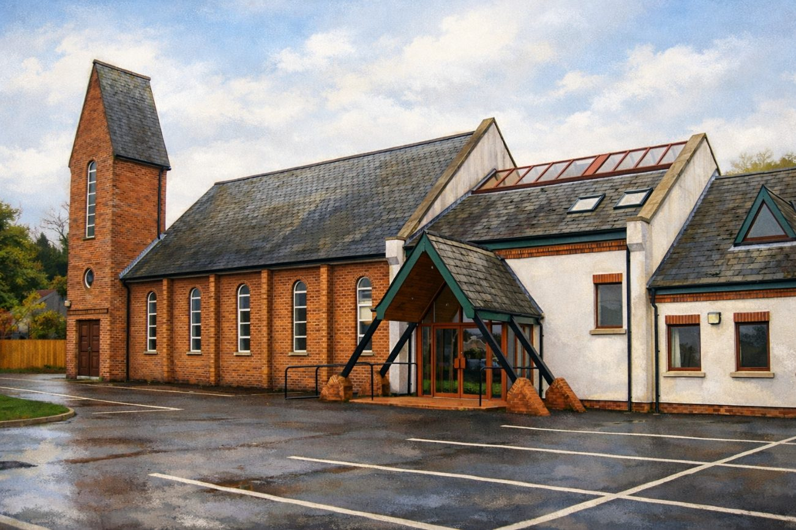

Fundamental in Doctrine
Holding fast to the inspired, infallible Word of God as our sole authority for faith and practice.
1951 – 2026 · Seventy-five years
Crossgar is an historic congregation — the first church of the Free Presbyterian Church of Ulster, born out of revival blessing and a stand for the gospel.
New beginnings
St Patrick’s Day, 1951, marked the birth of Crossgar Free Presbyterian Church — the first congregation in what would become a denomination. On that day Presbyterian believers in Crossgar, convinced of the need to separate from their denomination, took their stand for the truth of Christ.
From an evangelical perspective the Presbyterian Church had been much influenced by liberal theology, culminating in the heresy trials of Professor Ernest Davey in 1927. His eventual acquittal, and later elevation to Moderator of the General Assembly in 1953, symbolised the denomination’s drift from Scripture. Against this backdrop, faithful Presbyterians from Crossgar — principally from Lissara Presbyterian Church — founded the non-denominational Crossgar Mission Hall to unite local evangelicals. Purchased by “Hallelujah” George Gibson and erected on Killyleagh Street, it was built of timber and corrugated iron, seated around eighty, and served as a centre for prayer and gospel outreach.
In 1950, planning their anticipated mission, the Mission Hall committee approached Rev. Ian Paisley, the young minister of the secessionist Ravenhill Evangelical Church. He responded positively, and a four-to-six week campaign was arranged to commence on Sunday 4th February 1951. Application was made for the use of Lissara’s hall and unanimously granted by its Session, and advertisements announced the coming Gospel Campaign.
Within Lissara, however, dissension grew when the Down Presbytery refused to uphold the Session’s decision. At 6:30pm on Saturday 3rd February, the Presbytery convened an extraordinary meeting and directed the Session to reverse its decision and withhold the hall from the missioners. Two newly ordained elders, Hugh-James Adams and George K. Gibson, refused to submit and were suspended on the spot.
While the meeting was still in progress, the mission’s supporters formed up behind the Boys’ Brigade in a memorably atrocious downpour and marched to Lissara’s hall — only to stand, fifteen minutes later, outside its locked doors. A New Beginning — The History of Crossgar FPC of Ulster
For the Crossgar Presbyterians, a line had been drawn between obedience to presbytery and loyalty to the gospel. Denied the hall, Rev. Paisley and the suspended elders led the worshippers to the smaller Killyleagh Street Mission Hall. Standing in wet clothes, the crowd resolved to continue the meetings there. The next morning — a Sabbath — they peacefully protested outside Lissara, and that evening the mission opened with Rev. Paisley preaching a sermon entitled “Three Men Going to Hell, All Living in Crossgar.” By Monday evening an estimated 500 were in attendance. The four-week campaign drew full congregations throughout, with 94 souls professing salvation.
During the campaign the dissenters resolved to establish a new Presbyterian church, free from presbytery control — evangelical, locally governed, and retaining ownership of its property. Seeking a distinctive name, Mr Hamilton Coulter proposed “Free Presbyterian,” with “of Ulster” added for distinction.
Crossgar Free Presbyterian Church of Ulster was formally constituted on St Patrick’s Day, 17th March 1951, in the Killyleagh Street Mission Hall, with Rev. Ian Paisley officiating. The meeting began at 3:00pm; every seat was filled and many listened from outside by loudspeaker. Worship opened with the 23rd Psalm. William Emerson was ordained an elder and, with Hugh-James Adams, George Gibson, Cecil Harvey, William Miscampbell and James Morrison, installed over the congregation. Rev. George Stears, a missionary home on furlough from South America, was inducted as minister pro tem. In his address Rev. Paisley declared that God was raising a new faithful witness in Ulster, prophesying that the church would grow in strength until “Ulster rings with its teachings.”
— Glynn Moore, co-author of “A New Beginning” & member of Crossgar Free Presbyterian Church


A look back
As the work progressed, with God’s help the congregation were enabled to build a purpose-built church in 1957, which still stands to this day. A new extension, with additional facilities, was opened in 1997.


“Though thy beginning was small, yet thy latter end should greatly increase.”
Job 8 · verse 7 · KJV
Through the decades
Constitution of the first Free Presbyterian congregation, following the revival mission in Crossgar. The first ministers were Rev. George Stears (1951–1953) and Rev. Sidney Lince (1953–1959).
The young congregation established its witness, holding fast to the fundamentals of the faith, with Rev. Cecil Menary becoming minister in 1962.
Through the darkest years of the Troubles, the church remained a beacon of gospel light and hope to the community.
Continued growth as the congregation matured in faith and expanded its outreach. Rev. Menary retired in 1988 and Rev. Fred Greenfield was installed in 1989.
Investment in youth ministry and children’s work. In 1997 a new church extension was opened with new facilities.
Rev. Greenfield received a call to Newtownards in 2001, and Rev. Gordon Dane was installed on 17th March 2002.
Embracing new methods while holding to timeless truths, serving the community with compassion and conviction.
Rev. Gordon Dane retires as minister after 22 years of faithful service to the congregation.
Celebrating three-quarters of a century of God’s faithfulness, still standing foursquare for the gospel of Jesus Christ. Rev. Raymond Morrow was installed as minister of Crossgar on 21st August 2026.
Faithful shepherds

Rev. George Stears1951 – 1953
The church today
A strong, Christ-centred, Bible-based church — proclaiming a living Christ to a dying world.
Holding fast to the inspired, infallible Word of God as our sole authority for faith and practice.
Standing apart from ecumenical compromise, maintaining the purity of the gospel testimony.
Passionately proclaiming the saving gospel of Jesus Christ to every creature, at home and abroad.
“Go ye into all the world, and preach the gospel to every creature.” · Mark 16:15
Continuing the witness
Come and hear the Word of God preached where the Free Presbyterian Church of Ulster began.
Plan your visit